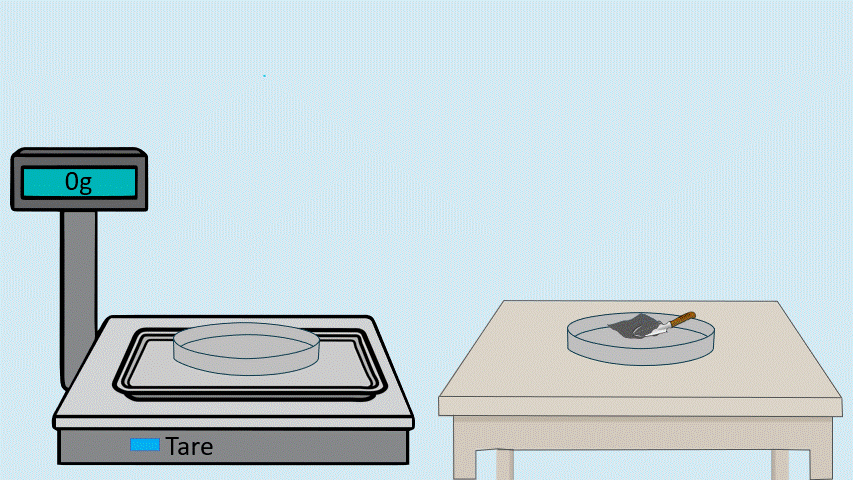
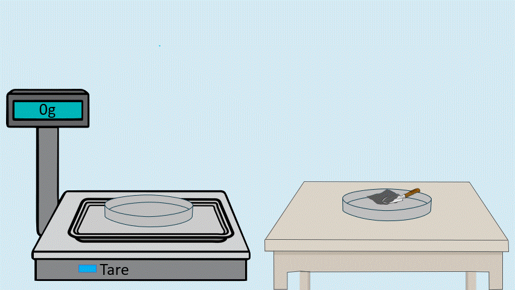

Step 2: Sample Weighing
About this step:
In this step, we will accurately weigh the cement sample using an analytical balance. Precise weighing is critical for quantitative chemical analysis as all subsequent calculations depend on the exact mass of the sample used.
Before weighing, the balance must be calibrated and tared (zeroed) to ensure accurate measurements. The cement sample will be placed in a clean, dry container and weighed to the nearest 0.001g. This precise measurement will allow us to determine the percentage of each chemical component in the sample.
Click on the Sample to begin weighing the cement sample.
 

👇